Web app · 2020
Confidential
This platform operates in multiple countries, managing consumption data. I focused on renewing it to enhance agility, flexibility, and simplicity, ensuring security for users.
The company values good user flow, given the wide range of functions for managing consumption. However, it's vital to maintain the familiar essence, as customers have relied on it for years. My research process involved gathering information from past years to assess client needs and platform operations.
However, it’s crucial to preserve the core features that customers have been familiar with for years, as the list of options for data processing is extensive.
Problem definition
- A long menu requiring scrolling.
- Inconsistent breadcrumbs and menu structure.
- Users needing guidance due to platform complexity.
- Visual clutter.
- No customer satisfaction surveys.
- The interface feels insecure.
- Outdated design.


What can be improved?
- Improve layout distribution for better organization.
- Use a more user-friendly interface for a large menu.
- Standardize navigation paths.
- Enhance the information architecture.
- Address client concerns effectively.
- Refresh the color palette for a modern look.
How can it be achieved?
- Enhance client comfort.
- Ensure consistency across pages.
- Improve navigation.
- Provide clearer guidance.
- Minimize user errors.
- Offer easy access to documentation.
- Create a more user-friendly flow.

Why is it necessary?
Archetypes
Clarissa
Accountant
Clarissa is a young woman with several years of experience in her profession. She is highly committed to her work, communicative, and a great negotiator. Her determined personality enables her to effectively execute her tasks.
As her responsibilities increase, she needs tools to manage and track any contracted services. While she tries to use various tools, it frustrates her not being able to save time.
Paul
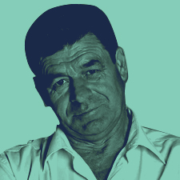
Operations Manager
Enjoys being the head of the team. He is responsible for receiving, communicating, and disseminating information from senior management. He works in the warehouse area, where being demanding and determined is crucial due to his role overseeing the inventory.
Having a tool that allows him to easily manage income, expenses, and generate reports quickly would be the most efficient way to handle his responsibilities.
John
IT Leader
John is bold, empathetic, and analytical. He leads a team that collaborates with other departments and is in charge of data control and technology management within the company. The team works remotely.
Is concerned about not having a platform to manage the status, capacity, and consumption of company-issued equipment. A tool that helps him manage these aspects will provide better control in his area.
MVP
- Update the design.
- Revamp the login page.
- Implement a general report dashboard.
- Standardize sections for result pages.
- Use modals for better interaction.
- Incorporate alerts for key notifications.
- Add a page load indicator for a smoother user experience.
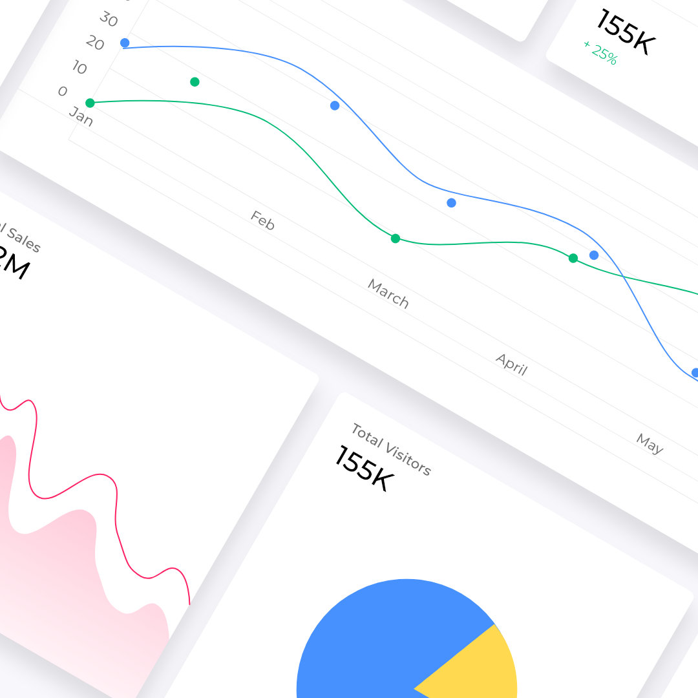
User flow
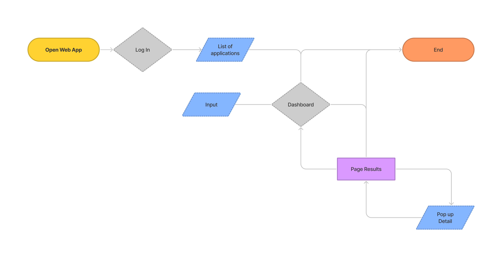
Sketching
Wireframes

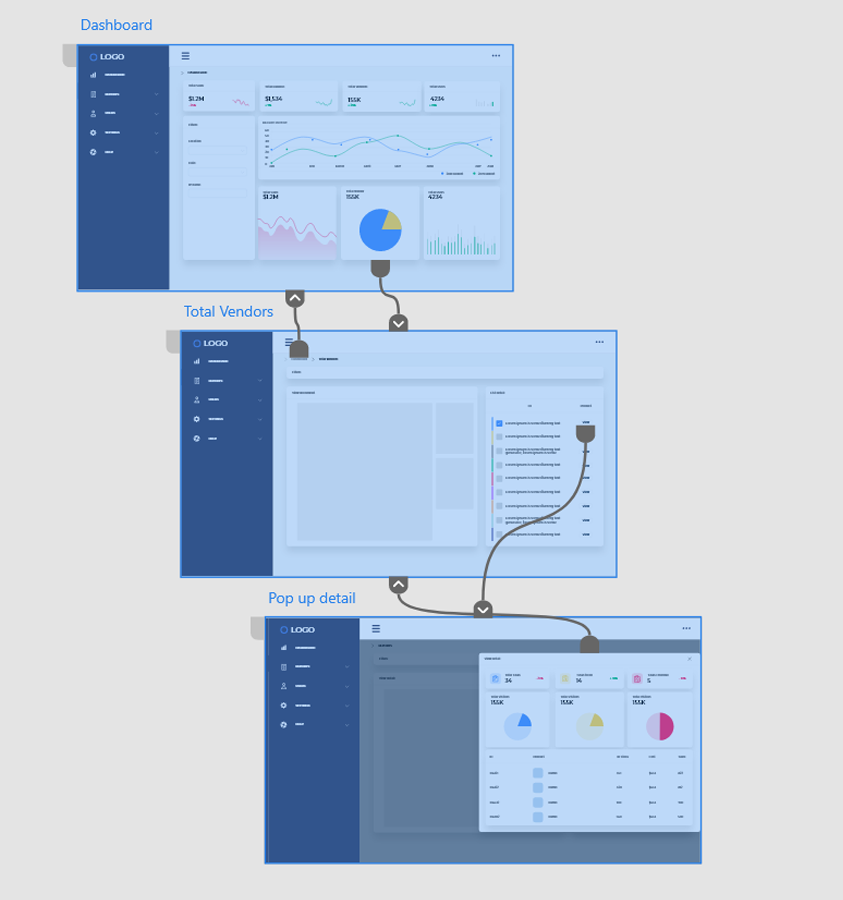
Prototype
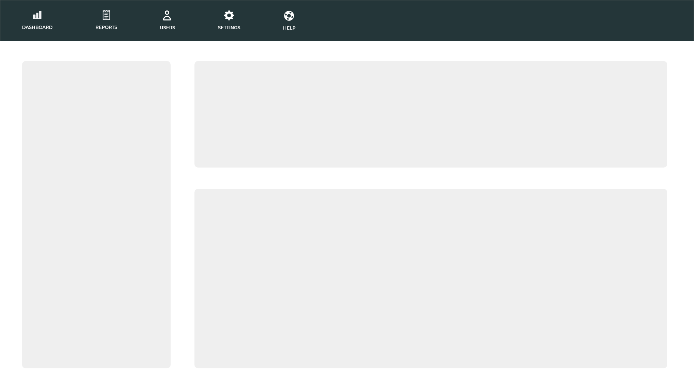
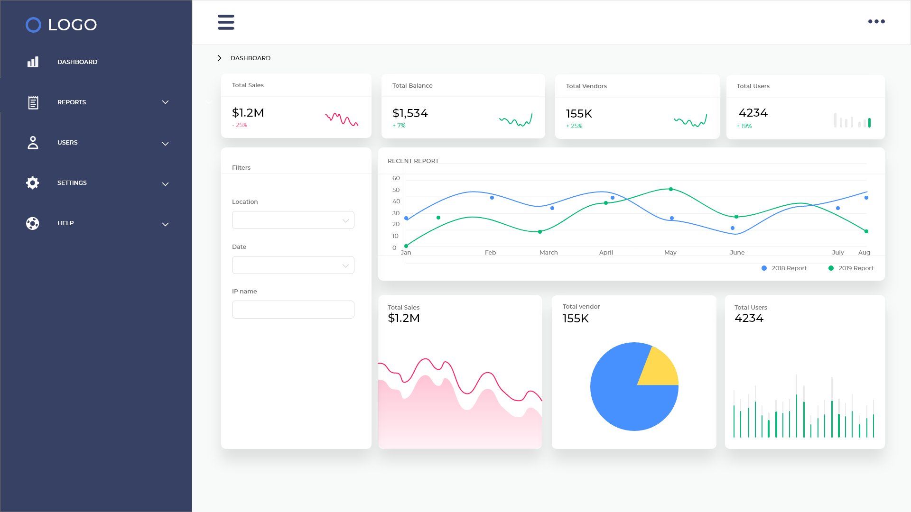
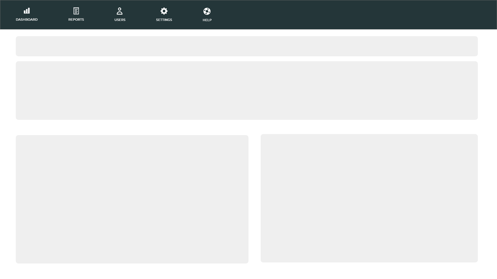
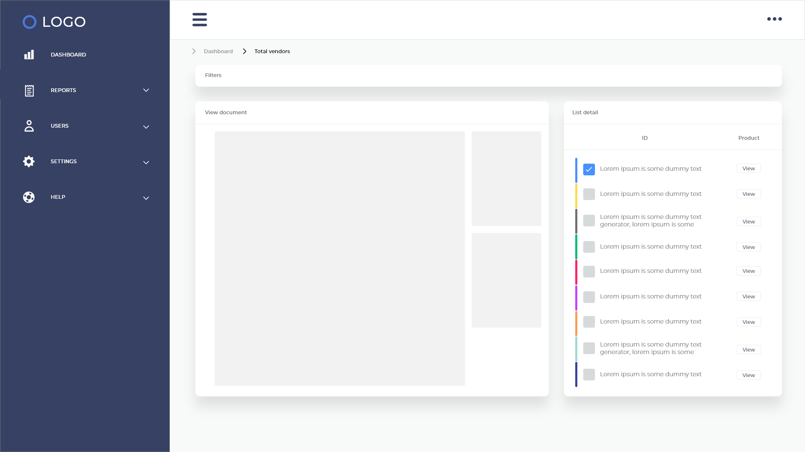
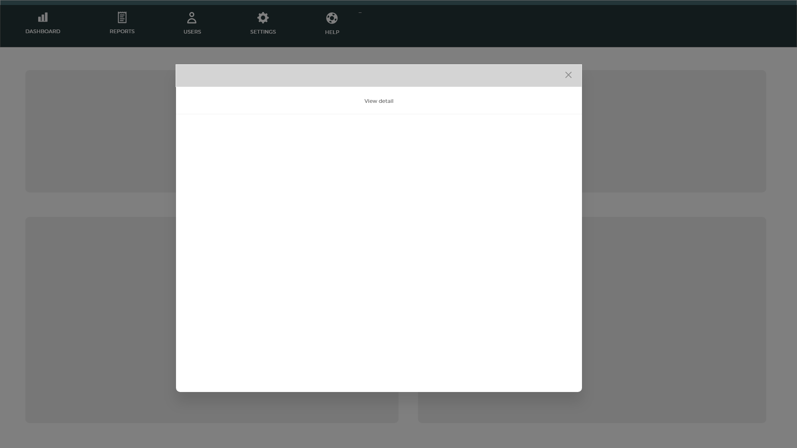
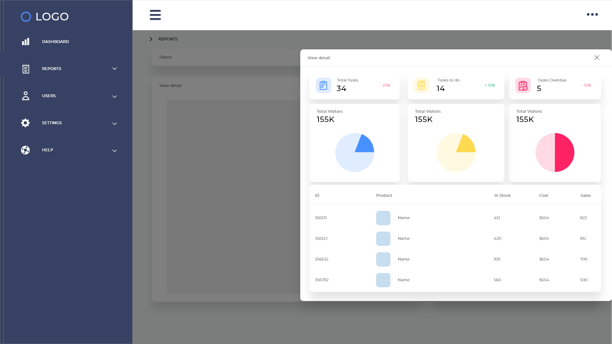
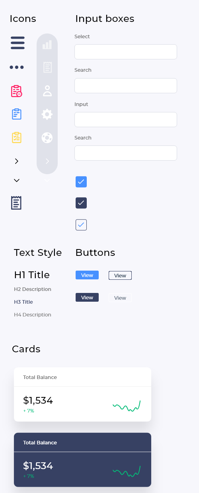
UI Kit
- Icons
- Input boxes
- Text Style
- Buttons
- Cards